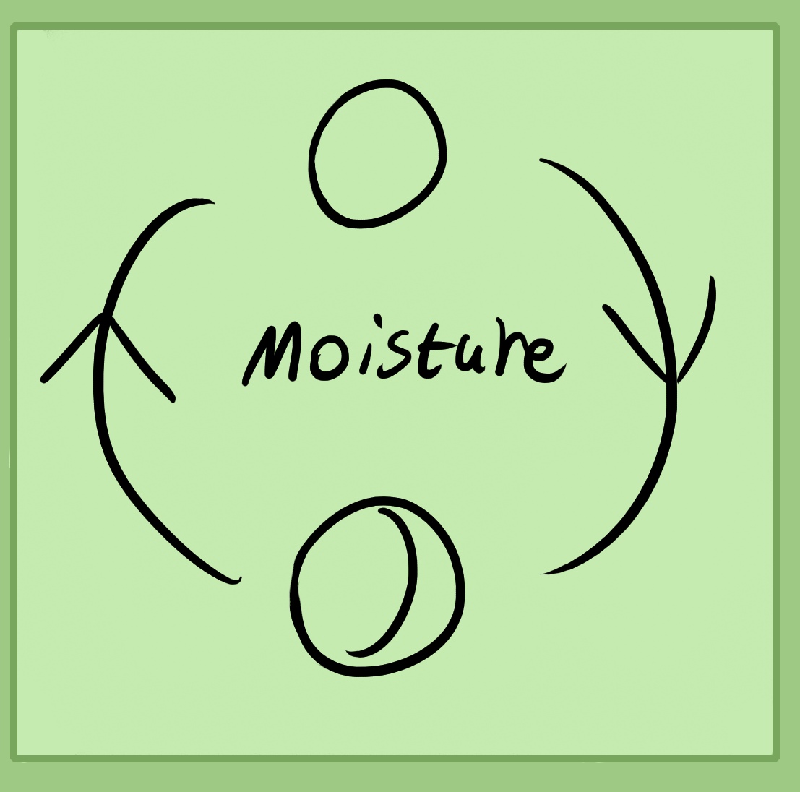

Above is a cycle of elements and hierarchy of elements.
All of reality is made out of these five basic elements. Earth, at the base or bottom is the most physical and material element. The ground below you, minerals, the physical body of animals and plants are all of the earth element. All solid objects are related to earth. Autumn is earth. (Postnote - You can replace earth with water for the left diagram and water could be winter.)
Water represents all liquids, oils, gels, fluid resins and other liquidy, unfixed substances. Water sits above earth and can be related to winter.
Air is the gaseous element. The air we breathe, smoke that comes off a herb and the smells that flowers give off are of air. Air is related to spring.
Fire is plasma, light, heat and fires of all kind (oil, gas, etc). Its season is summer.
Finally, space is related to electromagnetism and simple 3D geometrical space, non physical pressure and fields.
All of these elements work together and exist in their own kind of harmony.
Natural Cycles
During daytime the sun comes out and warms the earth. This causes water which is collected in ponds, rivers, the ocean, etc to transmute into air and rise upward. Then by similar flow of logic, night time cools the earth and allows for water to condense on/in it.
This is a very basic cycle of nature. Hence we can use this natural cycle in our own work since alchemy uses natures own methods to speed up natural processes far beyond what nature could possibly achieve in many hundreds or thousands of years.
To further this idea we can observe hotter locations and colder ones. It can be assumed that countries which are hotter will be transmuting their waters into air continuously while colder countries are always turning their air into water. The same goes for winter and summer. Summer is hot, a season of uplifting energy. The reason being is that energy actually is being up-lifted. Within your own body you will sweat more and might find yourself loosing more weight, feeling dryer or condensed. Though it does depend on if it's a dry heat, humid or in the middle.
Winter is the opposite and naturally encourages you to store fat, similarly colder locations will as well. Cold specifically draws energy into you, into the organs and bones. It makes one more relaxed as opposed to the heat making one excited and stimulated.
The moon supposedly has a similar effect. When it's high and full it draws moisture up and when it's new or empty it draws moisture down into the earth, roots of plants, etc.
Plants have their own cycles of flowering, seeding, fruiting and germinating for example. During the heat you may be able to smell flowers more as their volatile oils are in the air.
Animals of course have growth cycles, birth and death, adolescence, adulthood, etc. Usually they will breed during the right time for them in order to go along with nature instead of against it.
Though, don't think all things must or should follow a rigid order or schedule of nature. There also to some extent exists a counter force, a chaos and randomness as well which breaks structure.
Creation of the Universe
Supposedly in the beginning there was nothing. True nothingness where even the idea or the possibility of nothing could and did not exist.
From this nothingness spawned somethingness. They are known as the two dual elements or forces of positive and negative. I think of them as pressure the positive and space, the negative. Without space there is no place for existence to be and without pressure there is no energy or action.
Pressure within space formed stars which formed matter. This is a harmony of positive and negative to form more positive and negative. Cosmic incest if you will.
Pressure and space can also be thought of as electricity and magnetism.
Once the stars created matter this supposedly condensed and formed into planets like our own which became a bed for life. Over many years the cycles and combinations of elements, warming from the sun, cooling, etc eventually created some kind of atmosphere.
I hypothesize it relates to the electromagnetic aura field of the earth and as it matured, so did the atmosphere and eventually it became fertile enough to take on life because of the perfect conditions of heat cycles, water cycles, stable earth and an atmosphere.
With these hypothesis we can start to gain a basic idea of how a reality such as ours started to take it's basic form from true nothingness. Though, who knows what kind of other worlds or even planets formed that beings live on today.